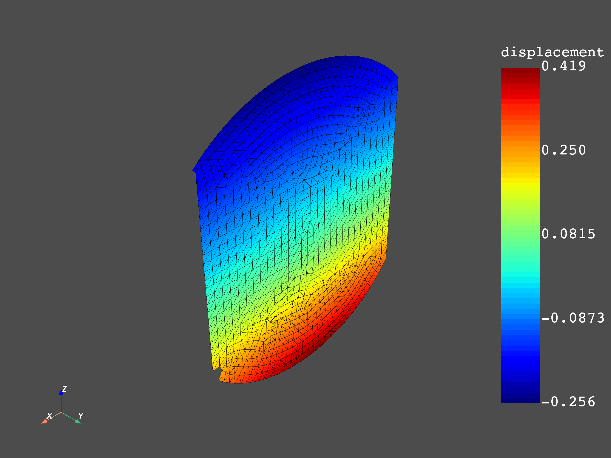
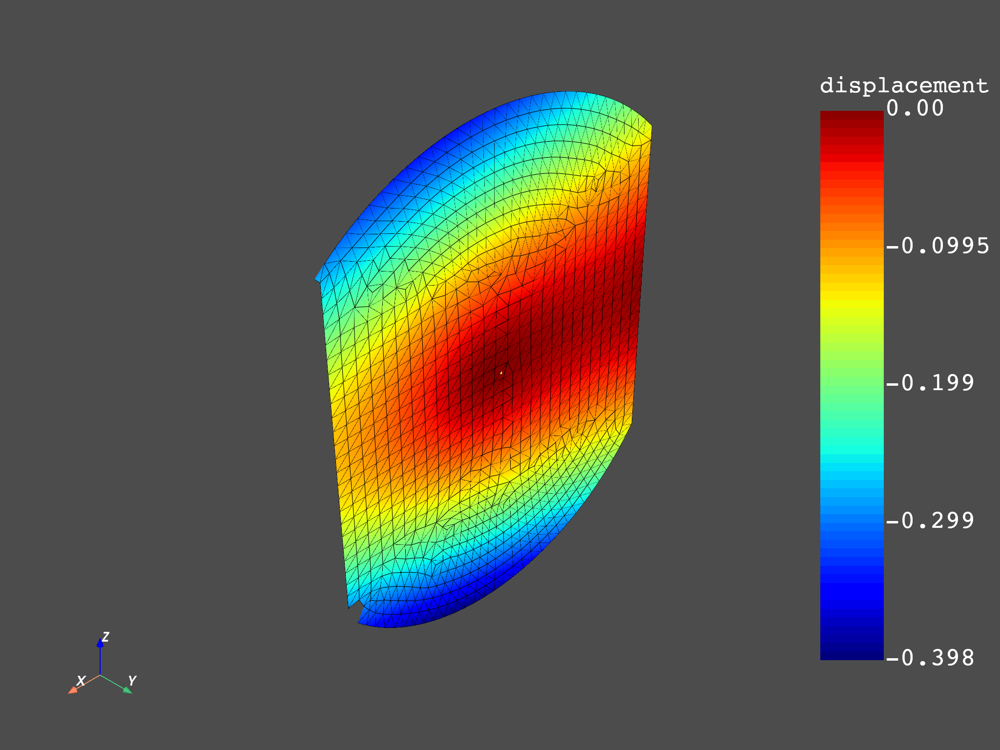

Note
Click here to download the full example code
Distributed mode superposition (MSUP)#
This example shows how to read and expand distributed files on distributed processes. The modal basis (two distributed files) is read on two remote servers. The modal response is then read and expanded on a third server.
The following diagram helps you to understand this example. It shows the operator chain that is used to compute the final result.
![digraph foo {
graph [pad="0", nodesep="0.3", ranksep="0.3"]
node [shape=box, style=filled, fillcolor="#ffcc00", margin="0"];
rankdir=LR;
splines=line;
disp01 [label="displacement"];
disp02 [label="displacement"];
mesh01 [label="mesh"];
mesh02 [label="mesh"];
subgraph cluster_1 {
ds01 [label="data_src", shape=box, style=filled, fillcolor=cadetblue2];
disp01; mesh01;
ds01 -> disp01 [style=dashed];
ds01 -> mesh01 [style=dashed];
label="Server 1";
style=filled;
fillcolor=lightgrey;
}
subgraph cluster_2 {
ds02 [label="data_src", shape=box, style=filled, fillcolor=cadetblue2];
disp02; mesh02;
ds02 -> disp02 [style=dashed];
ds02 -> mesh02 [style=dashed];
label="Server 2";
style=filled;
fillcolor=lightgrey;
}
disp01 -> "merge_fields";
mesh01 -> "merged_mesh";
disp02 -> "merge_fields";
mesh02 -> "merged_mesh";
ds03 [label="data_src", shape=box, style=filled, fillcolor=cadetblue2];
ds03 -> "response" [style=dashed];
"merged_mesh" -> "response";
"response" -> "expansion";
"merge_fields" -> "expansion";
"expansion" -> "component";
}](../../_images/graphviz-af827a7e4d4676d60b41e2ec2f41cc5179d91308.png)
Note
This example requires the Premium ServerContext. For more information, see Server context.
Import the dpf-core module and its examples files.
from ansys.dpf import core as dpf
from ansys.dpf.core import examples
from ansys.dpf.core import operators as ops
dpf.set_default_server_context(dpf.AvailableServerContexts.premium)
Configure the servers#
Make a list of IP addresses and port numbers that DPF servers start and listen on. Operator instances are created on each of these servers so that each server can address a different result file.
This example postprocesses an analysis distributed in two files. Consequently, it requires two remote processes.
To make it easier, this example starts local servers. However, you can connect to any existing servers on your network.
global_server = dpf.start_local_server(
as_global=True, config=dpf.AvailableServerConfigs.InProcessServer
)
remote_servers = [
dpf.start_local_server(as_global=False, config=dpf.AvailableServerConfigs.GrpcServer),
dpf.start_local_server(as_global=False, config=dpf.AvailableServerConfigs.GrpcServer),
]
ips = [remote_server.ip for remote_server in remote_servers]
ports = [remote_server.port for remote_server in remote_servers]
Print the IP addresses and ports.
print("ips:", ips)
print("ports:", ports)
ips: ['127.0.0.1', '127.0.0.1']
ports: [50054, 50055]
Specify the file path.
base_path = examples.find_distributed_msup_folder()
files = [base_path + r"/file0.mode", base_path + r"/file1.mode"]
files_aux = [base_path + r"/file0.rst", base_path + r"/file1.rst"]
Create operators on each server#
On each server, create two operators, one for displacement computations and one for providing the mesh. Then, define their data sources. Both the displacement operator and mesh provider operator receive data from their respective data files on each server.
remote_displacement_operators = []
remote_mesh_operators = []
for i, server in enumerate(remote_servers):
displacement = ops.result.displacement(server=server)
mesh = ops.mesh.mesh_provider(server=server)
remote_displacement_operators.append(displacement)
remote_mesh_operators.append(mesh)
ds = dpf.DataSources(files[i], server=server)
ds.add_file_path(files_aux[i])
displacement.inputs.data_sources(ds)
mesh.inputs.data_sources(ds)
Create a local operator chain for expansion#
The following series of operators merge the modal basis and the meshes, read the modal response, and expand the modal response with the modal basis.
merge_fields = ops.utility.merge_fields_containers()
merge_mesh = ops.utility.merge_meshes()
ds = dpf.DataSources(base_path + r"/file_load_1.rfrq")
response = ops.result.displacement(data_sources=ds)
response.inputs.mesh(merge_mesh.outputs.merges_mesh)
expansion = ops.math.modal_superposition(solution_in_modal_space=response, modal_basis=merge_fields)
component = ops.logic.component_selector_fc(expansion, 1)
Connect the operator chains together and get the output#
for i, server in enumerate(remote_servers):
merge_fields.connect(i, remote_displacement_operators[i], 0)
merge_mesh.connect(i, remote_mesh_operators[i], 0)
fc = component.get_output(0, dpf.types.fields_container)
merged_mesh = merge_mesh.get_output(0, dpf.types.meshed_region)
merged_mesh.plot(fc.get_field_by_time_complex_ids(1, 0))
merged_mesh.plot(fc.get_field_by_time_complex_ids(10, 0))
print(fc)
- 
- 
DPF Fields Container
with 20 field(s)
defined on labels: complex time
with:
- field 0 {complex: 0, time: 1} with Nodal location, 1 components and 1065 entities.
- field 1 {complex: 1, time: 1} with Nodal location, 1 components and 1065 entities.
- field 2 {complex: 0, time: 2} with Nodal location, 1 components and 1065 entities.
- field 3 {complex: 1, time: 2} with Nodal location, 1 components and 1065 entities.
- field 4 {complex: 0, time: 3} with Nodal location, 1 components and 1065 entities.
- field 5 {complex: 1, time: 3} with Nodal location, 1 components and 1065 entities.
- field 6 {complex: 0, time: 4} with Nodal location, 1 components and 1065 entities.
- field 7 {complex: 1, time: 4} with Nodal location, 1 components and 1065 entities.
- field 8 {complex: 0, time: 5} with Nodal location, 1 components and 1065 entities.
- field 9 {complex: 1, time: 5} with Nodal location, 1 components and 1065 entities.
- field 10 {complex: 0, time: 6} with Nodal location, 1 components and 1065 entities.
- field 11 {complex: 1, time: 6} with Nodal location, 1 components and 1065 entities.
- field 12 {complex: 0, time: 7} with Nodal location, 1 components and 1065 entities.
- field 13 {complex: 1, time: 7} with Nodal location, 1 components and 1065 entities.
- field 14 {complex: 0, time: 8} with Nodal location, 1 components and 1065 entities.
- field 15 {complex: 1, time: 8} with Nodal location, 1 components and 1065 entities.
- field 16 {complex: 0, time: 9} with Nodal location, 1 components and 1065 entities.
- field 17 {complex: 1, time: 9} with Nodal location, 1 components and 1065 entities.
- field 18 {complex: 0, time: 10} with Nodal location, 1 components and 1065 entities.
- field 19 {complex: 1, time: 10} with Nodal location, 1 components and 1065 entities.
Total running time of the script: ( 0 minutes 3.866 seconds)